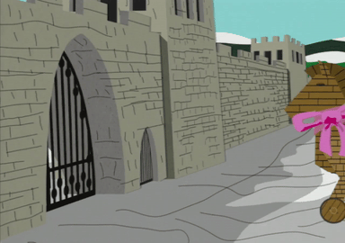

Программы-шпионы, вирусы, черви, трояны
Начало.
История появления и эволюции компьютерных вирусов, сетевых червей, троянских программ представляет собой достаточно интересный для изучения предмет. Зародившись как явление весьма необычное, как компьютерный феномен, в 1980-х годах, примитивные вирусы постепенно превращались в сложные технологические разработки, осваивали новые ниши, проникали в компьютерные сети. Идея вируса, заражающего другие программы и компьютеры, за двадцать лет трансформировалась в криминальный бизнес. Будучи изначально творчеством вирусописателей-исследователей, компьютерные вирусы стали оружием в руках интернет-преступников.

Cемейство вирусов: их виды и способы борьбы с ними
_TROJAN._
По анологии с троянским конём из "Илиады" Гомера проникают в компьютер жертвы под видом чего-то безобидного. Но, как только вредоносный код будет исполнен, компьютер жертвы начинает выполнять действия создателя трояна: воровать пароли, портить системные и пользовательские файлы или даже саму систему. Распространяются на торрент-трекерах, файлообменниках или подкидываются жертве методом социальной инженерии.
Методы борьбы - простейшие:
• Не скачивать и не запускать незнакомые файлы полученные из ненадёжного или подозрительного источника
• При малейшем подозрении на наличие заражения, воспользоваться бесплатными утилитами вроде
Примеры троянских программ: HookDump, Back Orifice, Pinch, TDL-4, Trojan.Winlock.
Windows заблокирован!
MALWARE._
MALWARE (от слов malicious и software) или Малварь - целое семейство вредоносов главная цель которых нанести вред компьютеру юзера или его содержимому.
Могут наносить как незначительный вред, в виде подсовывания рекламы, так лишать компьютер возможность работать, шифруя файлы или блокируя работу системы.

Методы борьбы:
Такая программа хорошо маскируется и может ничем не выдавать свое присутствие для пользователя. Для подобных задач существует специализирвоанный софт, например Malwarebytes. Однако очень многие вредоносные программы этого типа обладают настолько высокой степенью защиты, что их практически невозможно удалить после запуска.
Для разблокировки дочитайте статью
BOT_NET.
Сеть компьютеров, зараженных этим типом вирусов, готова в любой момент, по команде злоумышленника: атаковать запросами необходимый сервер, огранизовать спам-рассылку или использовать вычислительные мощности для майнинга криптовалюты. На изображении справа видна интерактивная карта DDOS-атак, в данном случае использовался мощный ботнет из тысяч компьютеров.

Методы борьбы:
• Не скачивать и не запускать незнакомые файлы полученные из ненадёжного или подозрительного источника
• При малейшем подозрении на наличие заражения, отключить компьютер от сети и воспользоваться бесплатными утилитами для сканирования.
Примеры известных DDOS-атак: Mafiaboy, Chanology, Ababil, Mirai